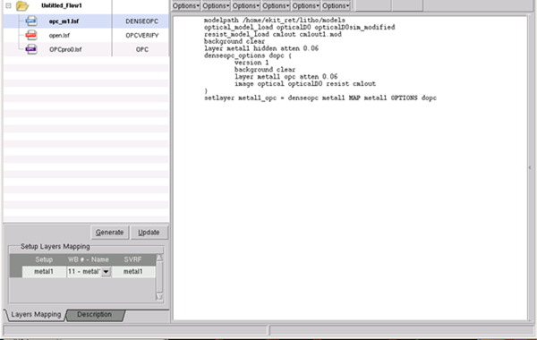

The Setup File
Editor has two functional areas: the main setup file display field
and two tabs, Layers Mapping and Description, at the bottom
left corner of the window. You can edit the setup file directly
in the main display field.
Figure 1. Setup File Editor
Procedure
- You can load, create,
or import a setup file from a variety of sources. These include:
Once the setup file is loaded,
you can edit the text directly in the main text display field.
- Use the Setup Layers Mapping field
to map the layers in the RET Flow Tool. Setup files typically do
not have layer numbers specified.
If you want to reflect edits to the setup file in the
SVRF used to generate derived layers, click Generate. These appear
in the SVRF Layer Name column (and are saved in the session file).
- Use the Description tab to enter any comments
associated with your session.